1. 简介3
(1) 目的3
(2) 环境3
2. 功能说明4
(1) 入门与打开4
(2) 播放与控制6
(3) 显示与字幕10
(4) 设置与账号12
本文档用于说明“鲲穹影音（鲲穹AI播放器3）”的基础使用方式与常用功能入口，面向普通用户与交付验收人员。
操作系统：Windows 10/11（推荐 64 位）。运行环境：桌面端 Electron 应用。建议分辨率：1366×768 及以上。支持常见视频格式（如 mp4/mkv/avi/mov 等）。
主界面概览
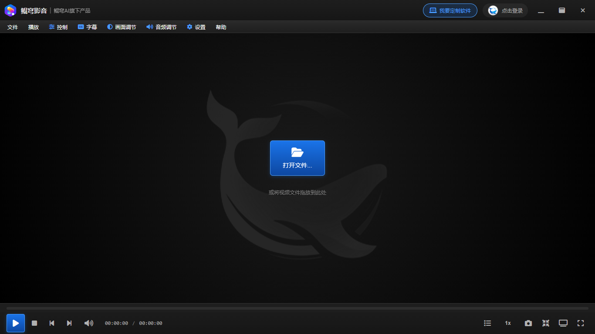
通过 URL 打开在线视频/直链进行播放。
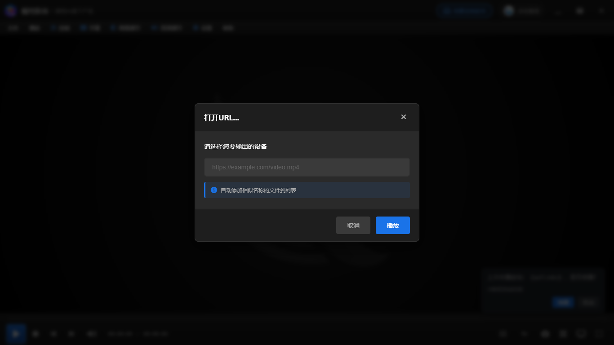
从欢迎页一键打开本地文件开始播放。
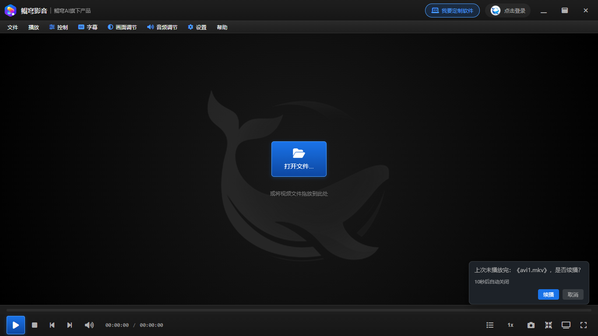
常用播放操作：播放/暂停、停止、上一首/下一首、进度拖动、音量等。
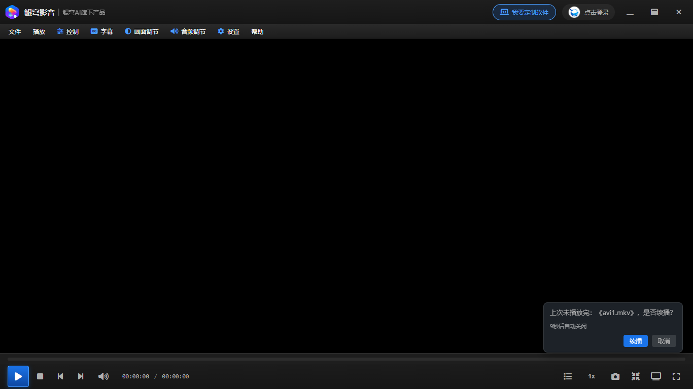
管理待播视频列表，支持添加文件、清空列表、切换播放模式。
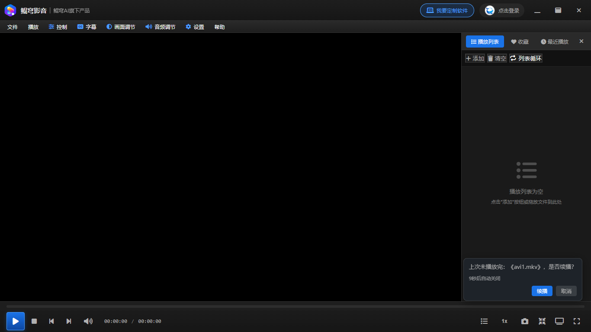
按需要切换播放速度（如 0.5×/1×/1.25×/1.5×/2× 等）。
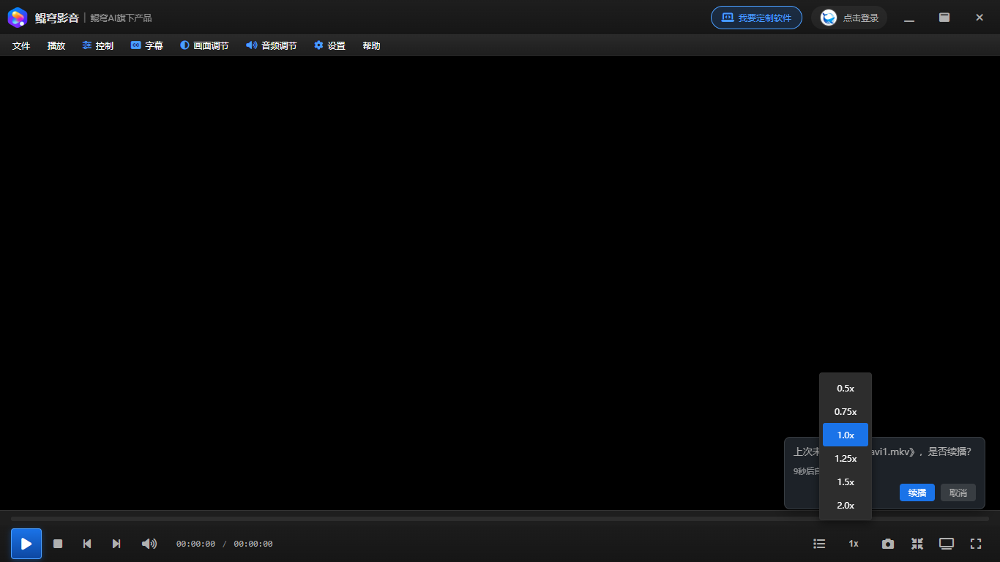
一键截取当前画面并保存到本地（具体保存位置以应用提示为准）。
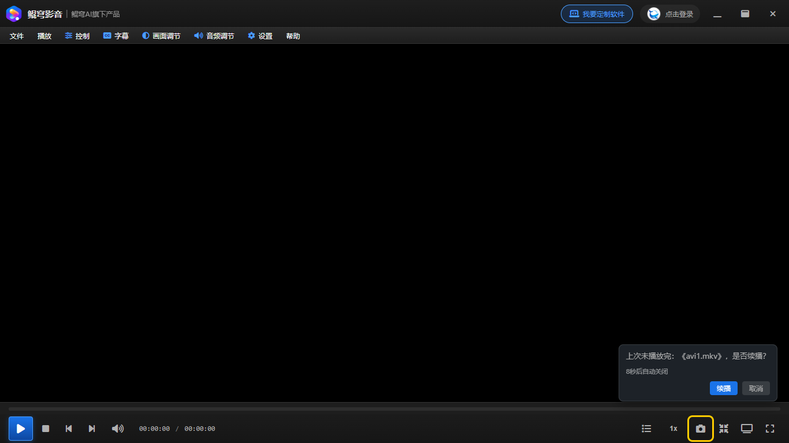
将视频以小窗形式置顶显示，便于边看边做其它操作（部分系统/驱动环境可能限制）。
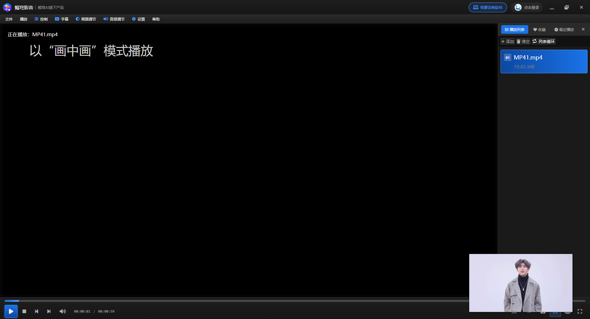
选择字幕轨道、加载字幕文件，并调整字体、大小、颜色、同步延迟与位置等。
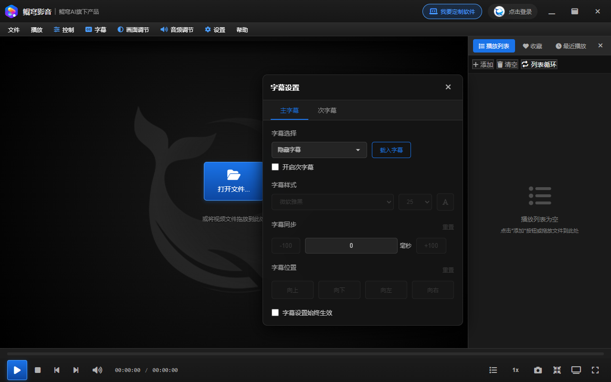
打开设置面板，配置播放、显示、快捷键等偏好，并支持应用/取消。
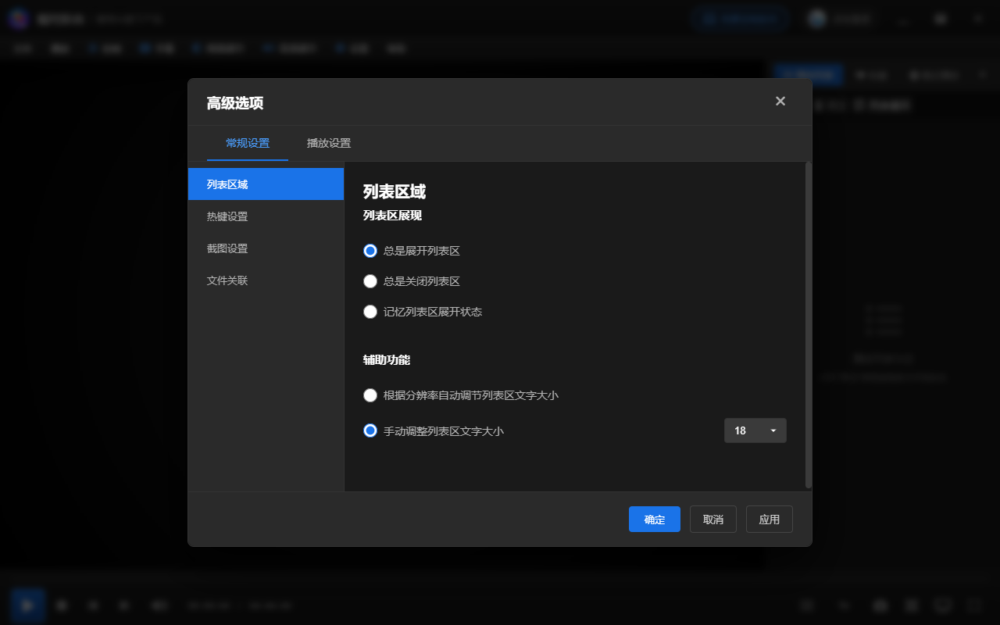
点击头像区域打开账号面板，进行登录/退出登录，查看令牌等信息。
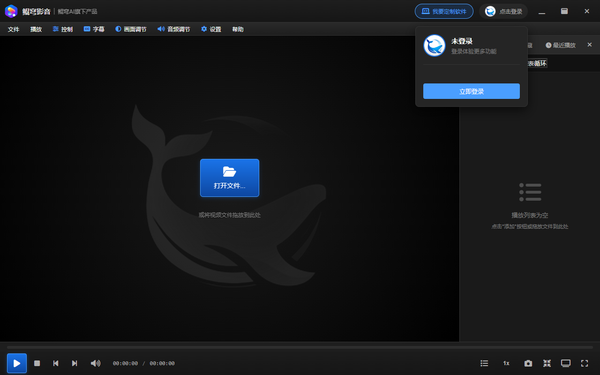